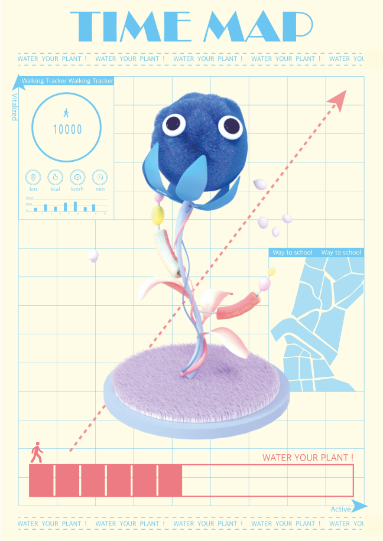
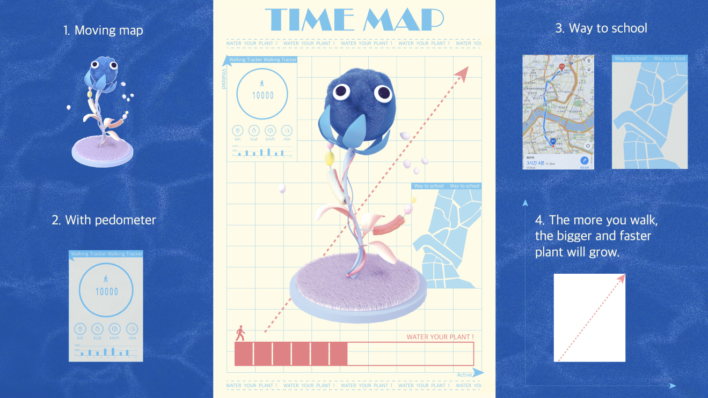
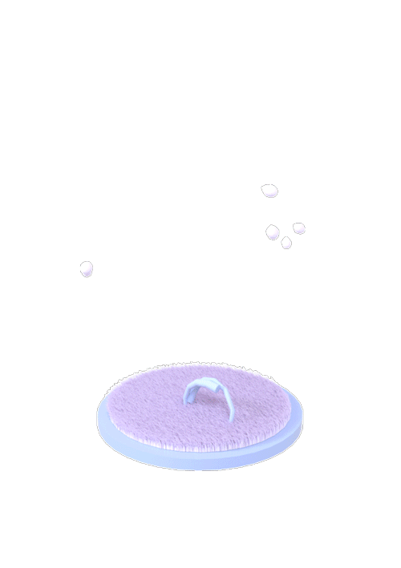
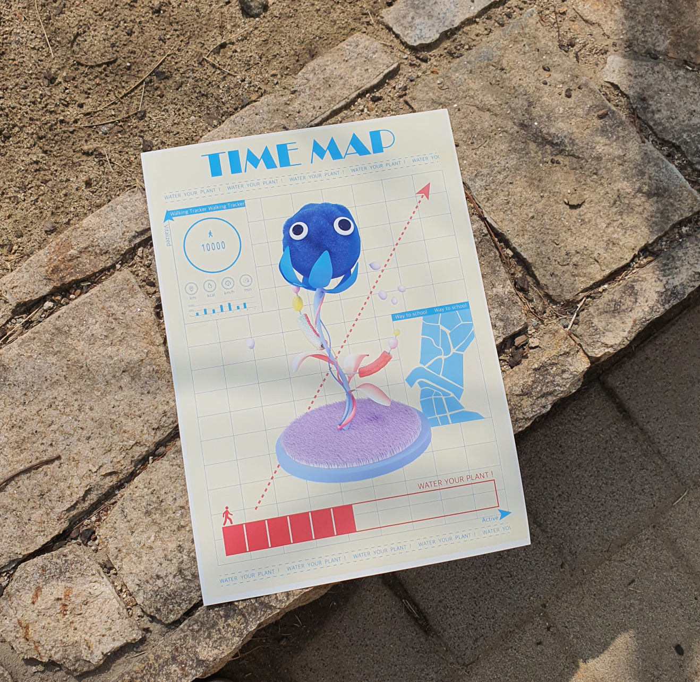

Project
Contact
@jo__an_ne__
Designer
Mapping Time
김조은
WATER YOUR PLANT!
Category
-
나에게 있어 중요한 시간은 어떤 형태로든 움직이고 활동하는 시간이라고 생각한다.
‘움직임’과 ‘활성화’를 키워드로 재미있는 지도를 디자인했다. 걸어다닐 때마다 개인의 식물은 자라난다.
나의 식물은 어떤 형태일까.
   